Bayes
The marginaleffects package offers convenience functions to compute
and display predictions, contrasts, and marginal effects from bayesian
models estimated by the brms package. To compute these quantities,
marginaleffects relies on workhorse functions from the brms package
to draw from the posterior distribution. The type of draws used is
controlled by using the type argument of the predictions or slopes
functions:
type = "response": Compute posterior draws of the expected value using thebrms::posterior_epredfunction.type = "link": Compute posterior draws of the linear predictor using thebrms::posterior_linpredfunction.type = "prediction": Compute posterior draws of the posterior predictive distribution using thebrms::posterior_predictfunction.
The predictions and slopes functions can also pass additional
arguments to the brms prediction functions via the ... ellipsis. For
example, if mod is a mixed-effects model, then this command will
compute 10 draws from the posterior predictive distribution, while
ignoring all group-level effects:
See the brms documentation for a list of available arguments:
Logistic regression with multiplicative interactions
Load libraries and download data on passengers of the Titanic from the Rdatasets archive:
library(marginaleffects)
library(brms)
library(ggplot2)
library(ggdist)
dat <- read.csv("https://vincentarelbundock.github.io/Rdatasets/csv/carData/TitanicSurvival.csv")
dat$survived <- ifelse(dat$survived == "yes", 1, 0)
dat$woman <- ifelse(dat$sex == "female", 1, 0)
Fit a logit model with a multiplicative interaction:
Adjusted predictions
We can compute adjusted predicted values of the
outcome variable (i.e., probability of survival aboard the Titanic)
using the predictions function. By default, this function calculates
predictions for each row of the dataset:
predictions(mod)
#>
#> Estimate 2.5 % 97.5 %
#> 0.9367 0.9070 0.9590
#> 0.8493 0.7453 0.9187
#> 0.9433 0.8949 0.9704
#> 0.5131 0.4302 0.6000
#> 0.9375 0.9080 0.9601
#> --- 1036 rows omitted. See ?avg_predictions and ?print.marginaleffects ---
#> 0.0376 0.0235 0.0581
#> 0.5859 0.5017 0.6663
#> 0.1043 0.0801 0.1337
#> 0.1017 0.0779 0.1307
#> 0.0916 0.0691 0.1189
#> Columns: rowid, estimate, conf.low, conf.high, survived, woman, age, passengerClass
#> Type: response
To visualize the relationship between the outcome and one of the
regressors, we can plot conditional adjusted predictions with the
plot_predictions function:

Compute adjusted predictions for some user-specified values of the
regressors, using the newdata argument and the datagrid function:
pred <- predictions(mod,
newdata = datagrid(woman = 0:1,
passengerClass = c("1st", "2nd", "3rd")))
pred
#>
#> woman passengerClass Estimate 2.5 % 97.5 %
#> 0 1st 0.5149 0.4319 0.602
#> 0 2nd 0.2013 0.1536 0.261
#> 0 3rd 0.0875 0.0656 0.114
#> 1 1st 0.9364 0.9066 0.959
#> 1 2nd 0.7783 0.7090 0.835
#> 1 3rd 0.5701 0.4938 0.644
#>
#> Columns: rowid, estimate, conf.low, conf.high, survived, age, woman, passengerClass
#> Type: response
The posterior_draws function samples from the posterior distribution
of the model, and produces a data frame with drawid and draw
columns.
pred <- posterior_draws(pred)
head(pred)
#> drawid draw rowid estimate conf.low conf.high survived age woman passengerClass
#> 1 1 0.46566713 1 0.51492993 0.43192231 0.6018749 0.4082218 29.88113 0 1st
#> 2 1 0.16658900 2 0.20128833 0.15362308 0.2613351 0.4082218 29.88113 0 2nd
#> 3 1 0.08750961 3 0.08750369 0.06555724 0.1141134 0.4082218 29.88113 0 3rd
#> 4 1 0.93735755 4 0.93641346 0.90660921 0.9587589 0.4082218 29.88113 1 1st
#> 5 1 0.77437334 5 0.77829290 0.70896643 0.8346419 0.4082218 29.88113 1 2nd
#> 6 1 0.62216334 6 0.57010265 0.49377997 0.6441967 0.4082218 29.88113 1 3rd
This “long” format makes it easy to plots results:
ggplot(pred, aes(x = draw, fill = factor(woman))) +
geom_density() +
facet_grid(~ passengerClass, labeller = label_both) +
labs(x = "Predicted probability of survival", y = "", fill = "Woman")
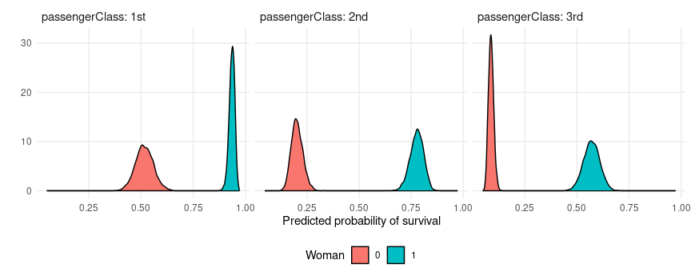
Marginal effects
Use slopes() to compute marginal effects (slopes of the regression
equation) for each row of the dataset, and use ) to
compute “Average Marginal Effects”, that is, the average of all
observation-level marginal effects:
mfx <- slopes(mod)
mfx
#>
#> Term Contrast Estimate 2.5 % 97.5 %
#> age dY/dX -0.000237 -0.001335 0.000880
#> age dY/dX -0.007257 -0.008973 -0.005265
#> age dY/dX -0.000214 -0.000831 0.001242
#> age dY/dX -0.014258 -0.018487 -0.010306
#> age dY/dX -0.000234 -0.001242 0.000923
#> --- 4174 rows omitted. See ?avg_slopes and ?print.marginaleffects ---
#> woman 1 - 0 0.516022 0.401674 0.630788
#> woman 1 - 0 0.395843 0.307400 0.486515
#> woman 1 - 0 0.468892 0.401425 0.536243
#> woman 1 - 0 0.471069 0.403598 0.538028
#> woman 1 - 0 0.478699 0.410060 0.547549
#> Columns: rowid, term, contrast, estimate, conf.low, conf.high, predicted_lo, predicted_hi, predicted, tmp_idx, survived, woman, age, passengerClass
#> Type: response
Compute marginal effects with some regressors fixed at user-specified values, and other regressors held at their means:
slopes(
mod,
newdata = datagrid(
woman = 1,
passengerClass = "1st"))
#>
#> Term Contrast woman passengerClass Estimate 2.5 % 97.5 %
#> age dY/dX 1 1st -0.000238 -0.00136 0.000871
#> passengerClass 2nd - 1st 1 1st -0.157442 -0.22327 -0.102890
#> passengerClass 3rd - 1st 1 1st -0.365376 -0.43832 -0.294769
#> woman 1 - 0 1 1st 0.420368 0.34697 0.490373
#>
#> Columns: rowid, term, contrast, estimate, conf.low, conf.high, woman, passengerClass, predicted_lo, predicted_hi, predicted, tmp_idx, survived, age
#> Type: response
Compute and plot conditional marginal effects:
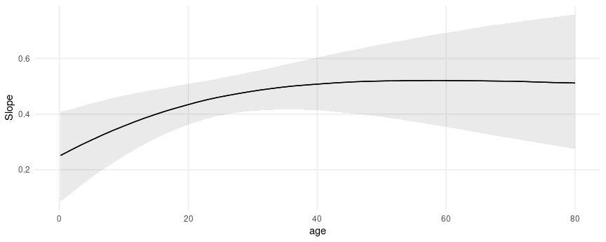
The posterior_draws produces a dataset with drawid and draw
columns:
draws <- posterior_draws(mfx)
dim(draws)
#> [1] 16736000 16
head(draws)
#> drawid draw rowid term contrast estimate conf.low conf.high predicted_lo predicted_hi predicted tmp_idx survived woman age passengerClass
#> 1 1 -0.0001793450 1 age dY/dX -0.0002373819 -0.0013354352 0.0008803236 0.9366624 0.9366585 0.9366604 1 1 1 29.0000 1st
#> 2 1 -0.0082459626 2 age dY/dX -0.0072572604 -0.0089728266 -0.0052650726 0.8493348 0.8492752 0.8493050 2 1 0 0.9167 1st
#> 3 1 -0.0001667655 3 age dY/dX -0.0002137451 -0.0008314784 0.0012415040 0.9433319 0.9433267 0.9433293 3 0 1 2.0000 1st
#> 4 1 -0.0160434697 4 age dY/dX -0.0142578648 -0.0184866253 -0.0103056297 0.5131552 0.5130514 0.5131011 4 0 0 30.0000 1st
#> 5 1 -0.0001774318 5 age dY/dX -0.0002336788 -0.0012419718 0.0009233460 0.9374947 0.9374927 0.9374937 5 0 1 25.0000 1st
#> 6 1 -0.0108173828 6 age dY/dX -0.0112764204 -0.0143192681 -0.0085783113 0.2730949 0.2730116 0.2730542 6 1 0 48.0000 1st
We can use this dataset to plot our results. For example, to plot the
posterior density of the marginal effect of age when the woman
variable is equal to 0 or 1:
mfx <- slopes(mod,
variables = "age",
newdata = datagrid(woman = 0:1)) |>
posterior_draws()
ggplot(mfx, aes(x = draw, fill = factor(woman))) +
stat_halfeye(slab_alpha = .5) +
labs(x = "Marginal Effect of Age on Survival",
y = "Posterior density",
fill = "Woman")
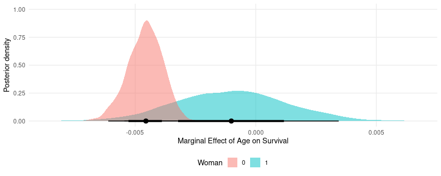
Random effects model
This section replicates some of the analyses of a random effects model
published in Andrew Heiss’ blog post: “A guide to correctly calculating
posterior predictions and average marginal effects with multilevel
Bayesian
models.”
The objective is mainly to illustrate the use of marginaleffects.
Please refer to the original post for a detailed discussion of the
quantities computed below.
Load libraries and download data:
library(brms)
library(ggdist)
library(patchwork)
library(marginaleffects)
vdem_2015 <- read.csv("https://github.com/vincentarelbundock/marginaleffects/raw/main/data-raw/vdem_2015.csv")
head(vdem_2015)
#> country_name country_text_id year region media_index party_autonomy_ord polyarchy civil_liberties party_autonomy
#> 1 Mexico MEX 2015 Latin America and the Caribbean 0.837 3 0.631 0.704 TRUE
#> 2 Suriname SUR 2015 Latin America and the Caribbean 0.883 4 0.777 0.887 TRUE
#> 3 Sweden SWE 2015 Western Europe and North America 0.956 4 0.915 0.968 TRUE
#> 4 Switzerland CHE 2015 Western Europe and North America 0.939 4 0.901 0.960 TRUE
#> 5 Ghana GHA 2015 Sub-Saharan Africa 0.858 4 0.724 0.921 TRUE
#> 6 South Africa ZAF 2015 Sub-Saharan Africa 0.898 4 0.752 0.869 TRUE
Fit a basic model:
mod <- brm(
bf(media_index ~ party_autonomy + civil_liberties + (1 | region),
phi ~ (1 | region)),
data = vdem_2015,
family = Beta(),
control = list(adapt_delta = 0.9))
Posterior predictions
To compute posterior predictions for specific values of the regressors,
we use the newdata argument and the datagrid function. We also use
the type argument to compute two types of predictions: accounting for
residual (observation-level) residual variance (prediction) or
ignoring it (response).
nd = datagrid(model = mod,
party_autonomy = c(TRUE, FALSE),
civil_liberties = .5,
region = "Middle East and North Africa")
p1 <- predictions(mod, type = "response", newdata = nd) |>
posterior_draws() |>
transform(type = "Response")
p2 <- predictions(mod, type = "prediction", newdata = nd) |>
posterior_draws() |>
transform(type = "Prediction")
pred <- rbind(p1, p2)
Extract posterior draws and plot them:
ggplot(pred, aes(x = draw, fill = party_autonomy)) +
stat_halfeye(alpha = .5) +
facet_wrap(~ type) +
labs(x = "Media index (predicted)",
y = "Posterior density",
fill = "Party autonomy")
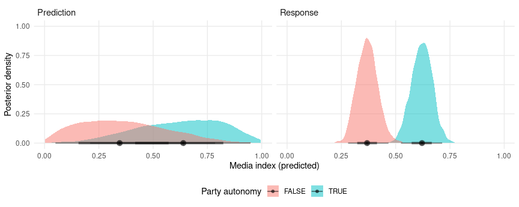
Marginal effects and contrasts
As noted in the Marginal Effects vignette, there should
be one distinct marginal effect for each combination of regressor
values. Here, we consider only one combination of regressor values,
where region is “Middle East and North Africa”, and civil_liberties
is 0.5. Then, we calculate the mean of the posterior distribution of
marginal effects:
mfx <- slopes(mod,
newdata = datagrid(civil_liberties = .5,
region = "Middle East and North Africa"))
mfx
#>
#> Term Contrast civil_liberties region Estimate 2.5 % 97.5 %
#> civil_liberties dY/dX 0.5 Middle East and North Africa 0.816 0.621 1.007
#> party_autonomy TRUE - FALSE 0.5 Middle East and North Africa 0.252 0.166 0.336
#>
#> Columns: rowid, term, contrast, estimate, conf.low, conf.high, civil_liberties, region, predicted_lo, predicted_hi, predicted, tmp_idx, media_index, party_autonomy
#> Type: response
Use the posterior_draws() to extract draws from the posterior
distribution of marginal effects, and plot them:
mfx <- posterior_draws(mfx)
ggplot(mfx, aes(x = draw, y = term)) +
stat_halfeye() +
labs(x = "Marginal effect", y = "")
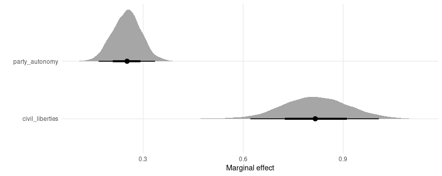
Plot marginal effects, conditional on a regressor:
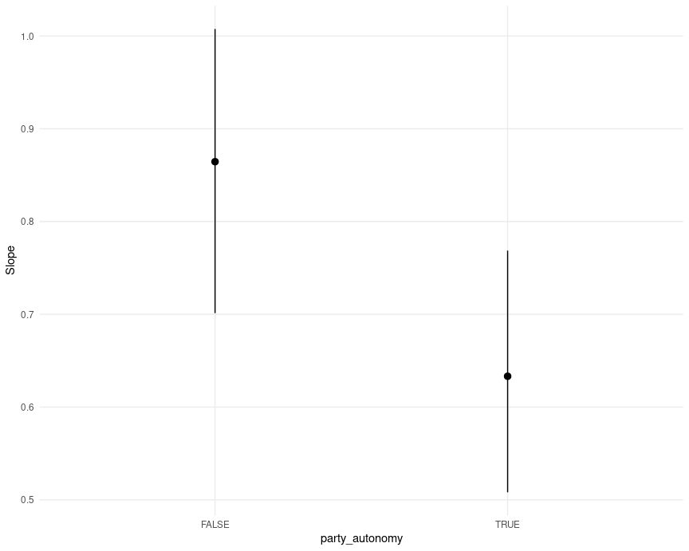
Continuous predictors
pred <- predictions(mod,
newdata = datagrid(party_autonomy = FALSE,
region = "Middle East and North Africa",
civil_liberties = seq(0, 1, by = 0.05))) |>
posterior_draws()
ggplot(pred, aes(x = civil_liberties, y = draw)) +
stat_lineribbon() +
scale_fill_brewer(palette = "Reds") +
labs(x = "Civil liberties",
y = "Media index (predicted)",
fill = "")
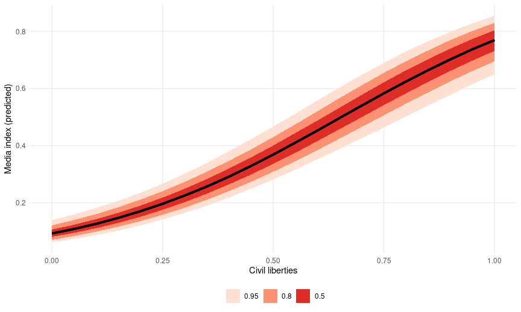
The slope of this line for different values of civil liberties can be obtained with:
mfx <- slopes(mod,
newdata = datagrid(
civil_liberties = c(.2, .5, .8),
party_autonomy = FALSE,
region = "Middle East and North Africa"),
variables = "civil_liberties")
mfx
#>
#> Term civil_liberties party_autonomy region Estimate 2.5 % 97.5 %
#> civil_liberties 0.2 FALSE Middle East and North Africa 0.490 0.361 0.639
#> civil_liberties 0.5 FALSE Middle East and North Africa 0.807 0.612 0.993
#> civil_liberties 0.8 FALSE Middle East and North Africa 0.807 0.675 0.934
#>
#> Columns: rowid, term, estimate, conf.low, conf.high, civil_liberties, party_autonomy, region, predicted_lo, predicted_hi, predicted, tmp_idx, media_index
#> Type: response
And plotted:
mfx <- posterior_draws(mfx)
ggplot(mfx, aes(x = draw, fill = factor(civil_liberties))) +
stat_halfeye(slab_alpha = .5) +
labs(x = "Marginal effect of Civil Liberties on Media Index",
y = "Posterior density",
fill = "Civil liberties")
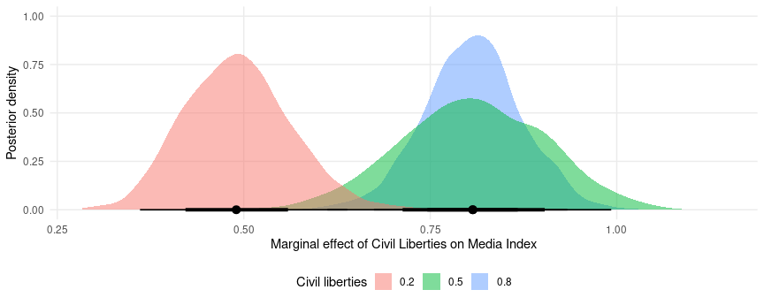
The slopes function can use the ellipsis (...) to push any argument
forward to the posterior_predict function. This can alter the types of
predictions returned. For example, the re_formula=NA argument of the
posterior_predict.brmsfit
method will
compute marginaleffects without including any group-level effects:
mfx <- slopes(
mod,
newdata = datagrid(
civil_liberties = c(.2, .5, .8),
party_autonomy = FALSE,
region = "Middle East and North Africa"),
variables = "civil_liberties",
re_formula = NA) |>
posterior_draws()
ggplot(mfx, aes(x = draw, fill = factor(civil_liberties))) +
stat_halfeye(slab_alpha = .5) +
labs(x = "Marginal effect of Civil Liberties on Media Index",
y = "Posterior density",
fill = "Civil liberties")
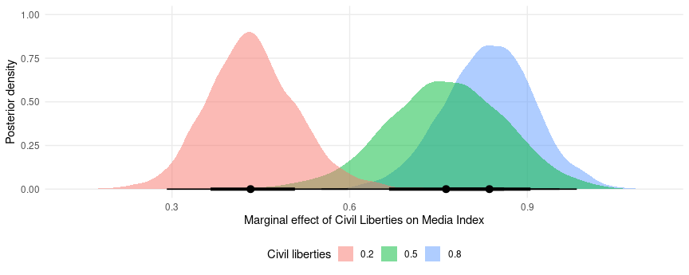
Global grand mean
pred <- predictions(
mod,
re_formula = NA,
newdata = datagrid(party_autonomy = c(TRUE, FALSE))) |>
posterior_draws()
mfx <- slopes(
mod,
re_formula = NA,
variables = "party_autonomy") |>
posterior_draws()
plot1 <- ggplot(pred, aes(x = draw, fill = party_autonomy)) +
stat_halfeye(slab_alpha = .5) +
labs(x = "Media index (Predicted)",
y = "Posterior density",
fill = "Party autonomy")
plot2 <- ggplot(mfx, aes(x = draw)) +
stat_halfeye(slab_alpha = .5) +
labs(x = "Contrast: Party autonomy TRUE - FALSE",
y = "",
fill = "Party autonomy")
## combine plots using the `patchwork` package
plot1 + plot2
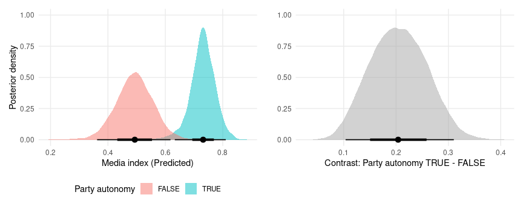
Region-specific predictions and contrasts
Predicted media index by region and level of civil liberties:
pred <- predictions(mod,
newdata = datagrid(region = vdem_2015$region,
party_autonomy = FALSE,
civil_liberties = seq(0, 1, length.out = 100))) |>
posterior_draws()
ggplot(pred, aes(x = civil_liberties, y = draw)) +
stat_lineribbon() +
scale_fill_brewer(palette = "Reds") +
facet_wrap(~ region) +
labs(x = "Civil liberties",
y = "Media index (predicted)",
fill = "")
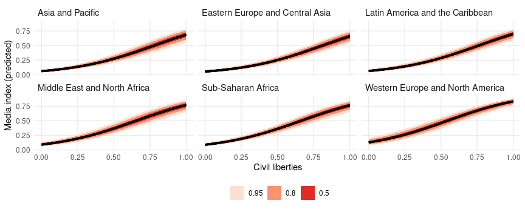
Predicted media index by region and level of civil liberties:
pred <- predictions(mod,
newdata = datagrid(region = vdem_2015$region,
civil_liberties = c(.2, .8),
party_autonomy = FALSE)) |>
posterior_draws()
ggplot(pred, aes(x = draw, fill = factor(civil_liberties))) +
stat_halfeye(slab_alpha = .5) +
facet_wrap(~ region) +
labs(x = "Media index (predicted)",
y = "Posterior density",
fill = "Civil liberties")
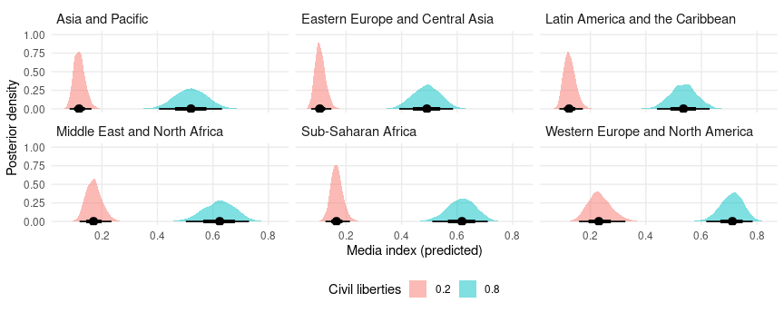
Predicted media index by region and party autonomy:
pred <- predictions(mod,
newdata = datagrid(region = vdem_2015$region,
party_autonomy = c(TRUE, FALSE),
civil_liberties = .5)) |>
posterior_draws()
ggplot(pred, aes(x = draw, y = region , fill = party_autonomy)) +
stat_halfeye(slab_alpha = .5) +
labs(x = "Media index (predicted)",
y = "",
fill = "Party autonomy")
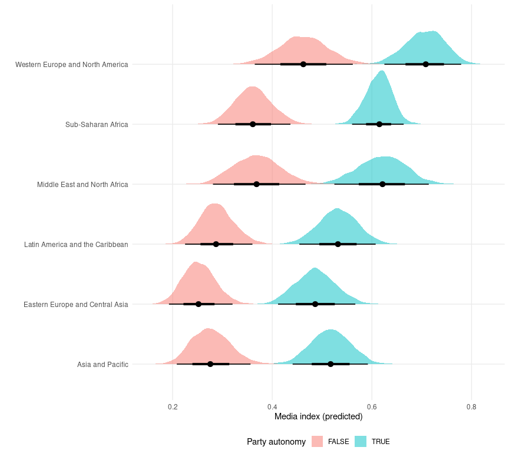
TRUE/FALSE contrasts (marginal effects) of party autonomy by region:
mfx <- slopes(
mod,
variables = "party_autonomy",
newdata = datagrid(
region = vdem_2015$region,
civil_liberties = .5)) |>
posterior_draws()
ggplot(mfx, aes(x = draw, y = region , fill = party_autonomy)) +
stat_halfeye(slab_alpha = .5) +
labs(x = "Media index (predicted)",
y = "",
fill = "Party autonomy")
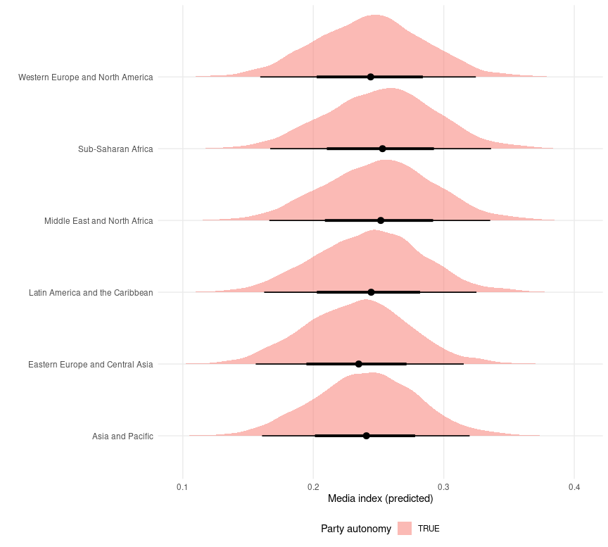
Hypothetical groups
We can also obtain predictions or marginal effects for a hypothetical
group instead of one of the observed regions. To achieve this, we create
a dataset with NA in the region column. Then we call the
marginaleffects or predictions functions with the allow_new_levels
argument. This argument is pushed through via the ellipsis (...) to
the posterior_epred function of the brms package:
dat <- data.frame(civil_liberties = .5,
party_autonomy = FALSE,
region = "New Region")
mfx <- slopes(
mod,
variables = "party_autonomy",
allow_new_levels = TRUE,
newdata = dat)
draws <- posterior_draws(mfx)
ggplot(draws, aes(x = draw)) +
stat_halfeye() +
labs(x = "Marginal effect of party autonomy in a generic world region", y = "")
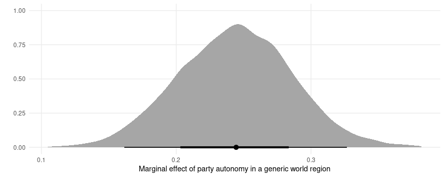
Averaging, marginalizing, integrating random effects
Consider a logistic regression model with random effects:
dat <- read.csv("https://vincentarelbundock.github.io/Rdatasets/csv/plm/EmplUK.csv")
dat$x <- as.numeric(dat$output > median(dat$output))
dat$y <- as.numeric(dat$emp > median(dat$emp))
mod <- brm(y ~ x + (1 | firm), data = dat, backend = "cmdstanr", family = "bernoulli")
We can compute adjusted predictions for a given value of x and for
each firm (random effects) as follows:
p <- predictions(mod, newdata = datagrid(x = 0, firm = unique))
head(p)
#>
#> x firm Estimate 2.5 % 97.5 %
#> 0 1 1.0e+00 9.01e-01 1.0000
#> 0 2 1.0e+00 8.95e-01 1.0000
#> 0 3 1.0e+00 9.12e-01 1.0000
#> 0 4 1.0e+00 7.97e-01 1.0000
#> 0 5 1.0e+00 9.09e-01 1.0000
#> 0 6 4.9e-08 8.42e-21 0.0019
#>
#> Columns: rowid, estimate, conf.low, conf.high, y, x, firm
#> Type: response
We can average/marginalize/integrate across random effects with the
avg_predictions() function or the by argument:
avg_predictions(mod, newdata = datagrid(x = 0, firm = unique))
#>
#> Estimate 2.5 % 97.5 %
#> 0.454 0.44 0.468
#>
#> Columns: estimate, conf.low, conf.high
#> Type: response
predictions(mod, newdata = datagrid(x = 0:1, firm = unique), by = "x")
#>
#> x Estimate 2.5 % 97.5 %
#> 0 0.454 0.440 0.468
#> 1 0.557 0.546 0.570
#>
#> Columns: x, estimate, conf.low, conf.high
#> Type: response
We can also draw from the (assumed gaussian) population distribution of
random effects, by asking predictions() to make predictions for new
“levels” of the random effects. If we then take an average of
predictions using avg_predictions() or the by argument, we will have
“integrated out the random effects”, as described in the brmsmargins
package
vignette.
In the code below, we make predictions for 100 firm identifiers which
were not in the original dataset. We also ask predictions() to push
forward the allow_new_levels and sample_new_levels arguments to the
brms::posterior_epred function:
predictions(
mod,
newdata = datagrid(x = 0:1, firm = -1:-100),
allow_new_levels = TRUE,
sample_new_levels = "gaussian",
by = "x")
#>
#> x Estimate 2.5 % 97.5 %
#> 0 0.451 0.339 0.567
#> 1 0.551 0.435 0.661
#>
#> Columns: x, estimate, conf.low, conf.high
#> Type: response
We can “integrate out” random effects in the other slopes functions
too. For instance,
avg_comparisons(
mod,
newdata = datagrid(firm = -1:-100),
allow_new_levels = TRUE,
sample_new_levels = "gaussian")
#>
#> Term Contrast Estimate 2.5 % 97.5 %
#> x 1 - 0 0.0964 0.0477 0.164
#>
#> Columns: term, contrast, estimate, conf.low, conf.high
#> Type: response
This is nearly equivalent the brmsmargins command output (with slight
variations due to different random seeds):
library(brmsmargins)
bm <- brmsmargins(
k = 100,
object = mod,
at = data.frame(x = c(0, 1)),
CI = .95,
CIType = "ETI",
contrasts = cbind("AME x" = c(-1, 1)),
effects = "integrateoutRE")
bm$ContrastSummary |> data.frame()
#> M Mdn LL UL PercentROPE PercentMID CI CIType ROPE MID Label
#> 1 0.09878179 0.09703761 0.04804325 0.1629987 NA NA 0.95 ETI <NA> <NA> AME x
See the alternative software vignette for
more information on brmsmargins.
Multinomial logit
Fit a model with categorical outcome (heating system choice in California houses) and logit link:
dat <- "https://vincentarelbundock.github.io/Rdatasets/csv/Ecdat/Heating.csv"
dat <- read.csv(dat)
mod <- brm(depvar ~ ic.gc + oc.gc,
data = dat,
family = categorical(link = "logit"))
Adjusted predictions
Compute predicted probabilities for each level of the outcome variable:
pred <- predictions(mod)
head(pred)
#>
#> Group Estimate 2.5 % 97.5 %
#> ec 0.0663 0.0447 0.0930
#> ec 0.0768 0.0590 0.0974
#> ec 0.1030 0.0618 0.1585
#> ec 0.0634 0.0459 0.0838
#> ec 0.0745 0.0574 0.0947
#> ec 0.0709 0.0455 0.1036
#>
#> Columns: rowid, group, estimate, conf.low, conf.high, depvar, ic.gc, oc.gc
#> Type: response
Extract posterior draws and plot them:
draws <- posterior_draws(pred)
ggplot(draws, aes(x = draw, fill = group)) +
geom_density(alpha = .2, color = "white") +
labs(x = "Predicted probability",
y = "Density",
fill = "Heating system")
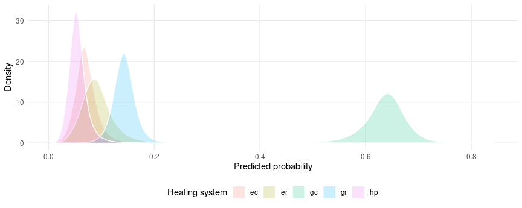
Use the plot_predictions function to plot conditional adjusted
predictions for each level of the outcome variable gear, conditional
on the value of the mpg regressor:
plot_predictions(mod, condition = "oc.gc") +
facet_wrap(~ group) +
labs(y = "Predicted probability")
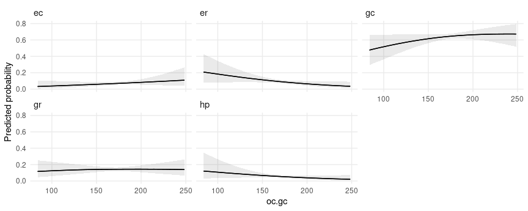
Marginal effects
avg_slopes(mod)
#>
#> Group Term Estimate 2.5 % 97.5 %
#> ec ic.gc -1.77e-04 -3.96e-04 2.37e-05
#> er ic.gc 1.65e-05 -2.26e-04 2.51e-04
#> gc ic.gc 1.38e-05 -3.72e-04 4.00e-04
#> gr ic.gc 4.24e-05 -2.37e-04 3.29e-04
#> hp ic.gc 1.07e-04 -7.73e-05 2.97e-04
#> ec oc.gc 4.88e-04 -4.04e-04 1.45e-03
#> er oc.gc -1.02e-03 -2.07e-03 2.98e-05
#> gc oc.gc 1.04e-03 -7.39e-04 2.78e-03
#> gr oc.gc 9.46e-05 -1.19e-03 1.34e-03
#> hp oc.gc -5.85e-04 -1.45e-03 2.30e-04
#>
#> Columns: term, group, estimate, conf.low, conf.high
#> Type: response
Hurdle models
This section replicates some analyses from yet another amazing blog post by Andrew Heiss.
To begin, we estimate a hurdle model in brms with random effects,
using data from the gapminder package: 704G
library(gapminder)
library(brms)
library(dplyr)
library(ggplot2)
library(ggdist)
library(cmdstanr)
library(patchwork)
library(marginaleffects)
set.seed(1024)
CHAINS <- 4
ITER <- 2000
WARMUP <- 1000
BAYES_SEED <- 1234
gapminder <- gapminder::gapminder |>
filter(continent != "Oceania") |>
# Make a bunch of GDP values 0
mutate(prob_zero = ifelse(lifeExp < 50, 0.3, 0.02),
will_be_zero = rbinom(n(), 1, prob = prob_zero),
gdpPercap = ifelse(will_be_zero, 0, gdpPercap)) |>
select(-prob_zero, -will_be_zero) |>
# Make a logged version of GDP per capita
mutate(log_gdpPercap = log1p(gdpPercap)) |>
mutate(is_zero = gdpPercap == 0)
mod <- brm(
bf(gdpPercap ~ lifeExp + year + (1 + lifeExp + year | continent),
hu ~ lifeExp),
data = gapminder,
backend = "cmdstanr",
family = hurdle_lognormal(),
cores = 2,
chains = CHAINS, iter = ITER, warmup = WARMUP, seed = BAYES_SEED,
silent = 2)
Adjusted predictions
Adjusted predictions for every observation in the original data:
predictions(mod) |> head()
#>
#> Estimate 2.5 % 97.5 %
#> 143 103 219
#> 168 125 256
#> 202 153 304
#> 251 197 373
#> 312 250 454
#> 398 325 567
#>
#> Columns: rowid, estimate, conf.low, conf.high, gdpPercap, lifeExp, year, continent
#> Type: response
Adjusted predictions for the hu parameter:
predictions(mod, dpar = "hu") |> head()
#>
#> Estimate 2.5 % 97.5 %
#> 0.574 0.475 0.652
#> 0.537 0.442 0.611
#> 0.496 0.407 0.566
#> 0.446 0.366 0.511
#> 0.396 0.325 0.454
#> 0.341 0.282 0.391
#>
#> Columns: rowid, estimate, conf.low, conf.high, gdpPercap, lifeExp, year, continent
#> Type: response
Predictions on a different scale:
predictions(mod, type = "link", dpar = "hu") |> head()
#>
#> Estimate 2.5 % 97.5 %
#> 0.2980 -0.101 0.6259
#> 0.1463 -0.235 0.4527
#> -0.0178 -0.377 0.2673
#> -0.2189 -0.551 0.0424
#> -0.4234 -0.730 -0.1857
#> -0.6573 -0.933 -0.4443
#>
#> Columns: rowid, estimate, conf.low, conf.high, gdpPercap, lifeExp, year, continent
#> Type: link
Plot adjusted predictions as a function of lifeExp:
plot_predictions(
mod,
condition = "lifeExp") +
labs(y = "mu") +
plot_predictions(
mod,
dpar = "hu",
condition = "lifeExp") +
labs(y = "hu")
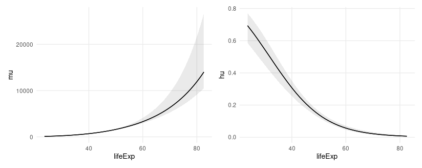
Predictions with more than one condition and the re_formula argument
from brms:
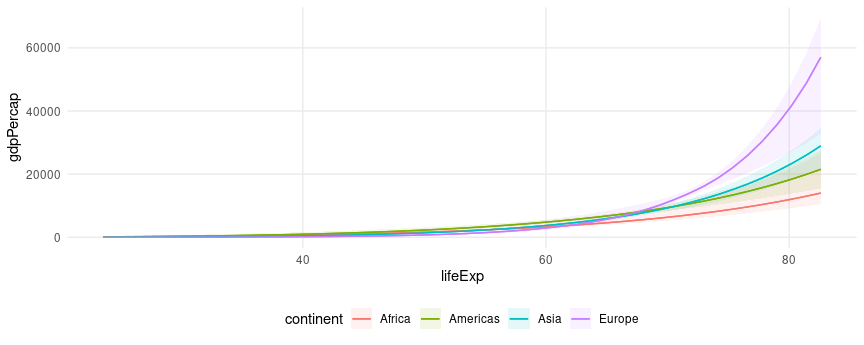
Extract draws with posterior_draws()
The posterior_draws() function extract raw samples from the posterior
from objects produced by marginaleffects. This allows us to use richer
geoms and summaries, such as those in the ggdist package:
predictions(
mod,
re_formula = NULL,
newdata = datagrid(model = mod,
continent = gapminder$continent,
year = c(1952, 2007),
lifeExp = seq(30, 80, 1))) |>
posterior_draws() |>
ggplot(aes(lifeExp, draw, fill = continent, color = continent)) +
stat_lineribbon(alpha = .25) +
facet_grid(year ~ continent)
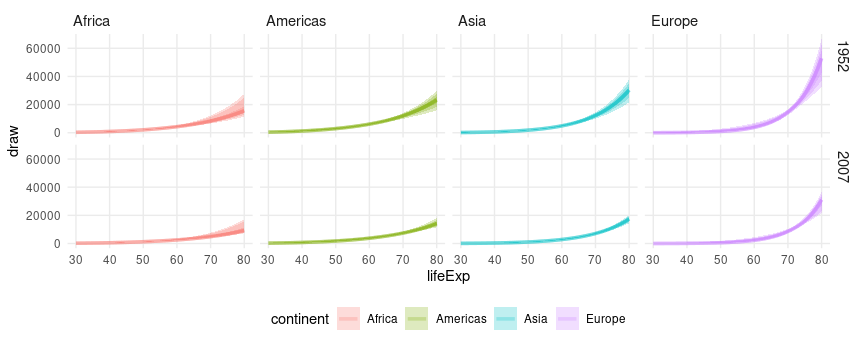
Average Contrasts
What happens to gdpPercap when lifeExp increases by one?
avg_comparisons(mod)
#>
#> Term Contrast Estimate 2.5 % 97.5 %
#> lifeExp +1 759.7 535.8 862.8
#> year +1 -63.5 -83.9 -40.9
#>
#> Columns: term, contrast, estimate, conf.low, conf.high
#> Type: response
What happens to gdpPercap when lifeExp increases by one standard
deviation?
avg_comparisons(mod, variables = list(lifeExp = "sd"))
#>
#> Term Contrast Estimate 2.5 % 97.5 %
#> lifeExp (x + sd/2) - (x - sd/2) 4050 3718 4741
#>
#> Columns: term, contrast, estimate, conf.low, conf.high
#> Type: response
What happens to gdpPercap when lifeExp increases from 50 to 60 and
year simultaneously increases its min to its max?
avg_comparisons(
mod,
variables = list(lifeExp = c(50, 60), year = "minmax"),
cross = TRUE)
#>
#> Estimate 2.5 % 97.5 % C: lifeExp C: year
#> 835 523 1404 60 - 50 Max - Min
#>
#> Columns: term, contrast_lifeExp, contrast_year, estimate, conf.low, conf.high
#> Type: response
Plot draws from the posterior distribution of average contrasts (not the same thing as draws from the posterior distribution of contrasts):
avg_comparisons(mod) |>
posterior_draws() |>
ggplot(aes(estimate, term)) +
stat_dotsinterval() +
labs(x = "Posterior distribution of average contrasts", y = "")
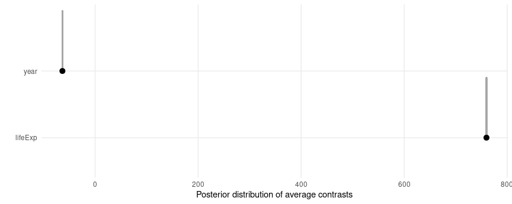
Marginal effects (slopes)
Average Marginal Effect of lifeExp on different scales and for
different parameters:
avg_slopes(mod)
#>
#> Term Estimate 2.5 % 97.5 %
#> lifeExp 718.5 515.4 811.4
#> year -63.8 -84.4 -41.1
#>
#> Columns: term, estimate, conf.low, conf.high
#> Type: response
avg_slopes(mod, type = "link")
#>
#> Term Estimate 2.5 % 97.5 %
#> lifeExp 0.08249 0.0742 0.08856
#> year -0.00937 -0.0120 -0.00632
#>
#> Columns: term, estimate, conf.low, conf.high
#> Type: link
avg_slopes(mod, dpar = "hu")
#>
#> Term Estimate 2.5 % 97.5 %
#> lifeExp -0.00817 -0.00937 -0.00669
#> year 0.00000 0.00000 0.00000
#>
#> Columns: term, estimate, conf.low, conf.high
#> Type: response
avg_slopes(mod, dpar = "hu", type = "link")
#>
#> Term Estimate 2.5 % 97.5 %
#> lifeExp -0.0993 -0.113 -0.0838
#> year 0.0000 0.000 0.0000
#>
#> Columns: term, estimate, conf.low, conf.high
#> Type: link
Plot Conditional Marginal Effects
plot_slopes(
mod,
variables = "lifeExp",
condition = "lifeExp") +
labs(y = "mu") +
plot_slopes(
mod,
dpar = "hu",
variables = "lifeExp",
condition = "lifeExp") +
labs(y = "hu")

Or we can call slopes() or comparisons() with posterior_draws()
function to have even more control:
comparisons(
mod,
type = "link",
variables = "lifeExp",
newdata = datagrid(lifeExp = c(40, 70), continent = gapminder$continent)) |>
posterior_draws() |>
ggplot(aes(draw, continent, fill = continent)) +
stat_dotsinterval() +
facet_grid(lifeExp ~ .) +
labs(x = "Effect of a 1 unit change in Life Expectancy")
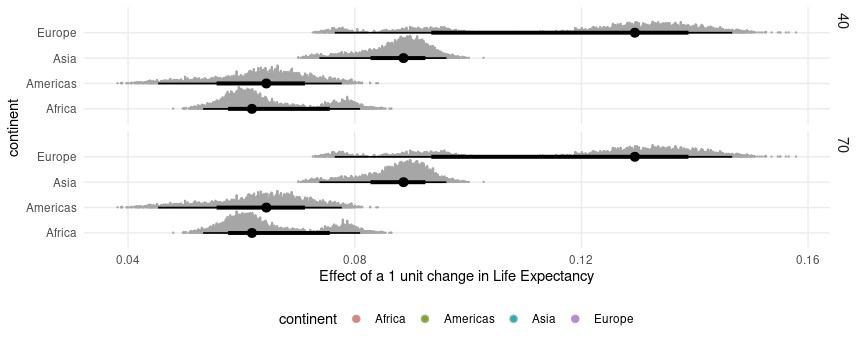
Bayesian estimates and credible intervals
For bayesian models like those produced by the brms or rstanarm
packages, the marginaleffects package functions report the median of
the posterior distribution as their main estimates.
The default credible intervals are equal-tailed intervals (quantiles), and the default function to identify the center of the distribution is the median. Users can customize the type of intervals reported by setting global options. Note that both the reported estimate and the intervals change slightly:
library(insight)
library(marginaleffects)
mod <- insight::download_model("brms_1")
options(marginaleffects_posterior_interval = "hdi")
options(marginaleffects_posterior_center = mean)
avg_comparisons(mod)
#>
#> Term Contrast Estimate 2.5 % 97.5 %
#> cyl +1 -1.50 -2.38 -0.677
#> wt +1 -3.21 -4.70 -1.570
#>
#> Columns: term, contrast, estimate, conf.low, conf.high
#> Type: response
options(marginaleffects_posterior_interval = "eti")
options(marginaleffects_posterior_center = stats::median)
avg_comparisons(mod)
#>
#> Term Contrast Estimate 2.5 % 97.5 %
#> cyl +1 -1.49 -2.36 -0.636
#> wt +1 -3.20 -4.79 -1.645
#>
#> Columns: term, contrast, estimate, conf.low, conf.high
#> Type: response
Random variables: posterior and ggdist
Recent versions of the posterior, brms, and ggdist packages make
it easy to draw, summarize and plot random variables. The
posterior_draws() can produce objects of class rvar which make it
easy to use those features by returning a data frame with a column of
type rvar:
library(brms)
library(ggdist)
library(ggplot2)
library(marginaleffects)
mod <- brm(am ~ mpg + hp, data = mtcars, family = bernoulli)
avg_comparisons(mod) |>
posterior_draws(shape = "rvar") |>
ggplot(aes(y = term, xdist = rvar)) +
stat_slabinterval()
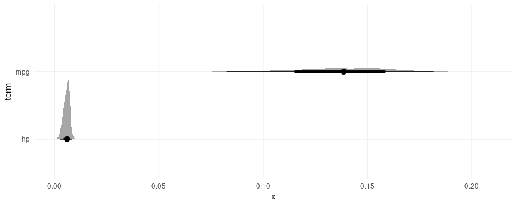
Non-linear hypothesis testing
We begin by estimating a model:
mod <- brm(am ~ mpg + hp, data = mtcars, family = bernoulli(),
seed = 1024, silent = 2, chains = 4, iter = 1000)
Notice that we can compute average contrasts in two different ways,
using the avg_comparisons() function or the comparison argument:
avg_comparisons(mod)
#>
#> Term Contrast Estimate 2.5 % 97.5 %
#> hp +1 0.00601 0.00289 0.00895
#> mpg +1 0.13942 0.08464 0.18139
#>
#> Columns: term, contrast, estimate, conf.low, conf.high
#> Type: response
comparisons(mod, comparison = "differenceavg")
#>
#> Term Contrast Estimate 2.5 % 97.5 %
#> hp mean(+1) 0.00601 0.00289 0.00895
#> mpg mean(+1) 0.13942 0.08464 0.18139
#>
#> Columns: term, contrast, estimate, conf.low, conf.high, predicted_lo, predicted_hi, predicted, tmp_idx
#> Type: response
Now, we use the hypothesis argument to compare the first to the second
rows of the comparisons() output:
comparisons(
mod,
comparison = "differenceavg",
hypothesis = "b2 - b1 = 0.2")
#>
#> Term Estimate 2.5 % 97.5 %
#> b2-b1=0.2 -0.0665 -0.119 -0.027
#>
#> Columns: term, estimate, conf.low, conf.high
#> Type: response
The hypotheses function of the brms package can also perform
non-linear hypothesis testing, and it generates some convenient
statistics and summaries. This function accepts a D-by-P matrix of draws
from the posterior distribution, where D is the number of draws and N is
the number of parameters. We can obtain such a matrix using the
posterior_draws(x, shape = "DxP"), and we can simply add a couple
calls to our chain of operations:
avg_comparisons(mod, comparison = "differenceavg") |>
posterior_draws(shape = "DxP") |>
brms::hypothesis("b2 - b1 > .2")
#> Hypothesis Tests for class :
#> Hypothesis Estimate Est.Error CI.Lower CI.Upper Evid.Ratio Post.Prob Star
#> 1 (b2-b1)-(.2) > 0 -0.07 0.02 -0.11 -0.03 0 0
#> ---
#> 'CI': 90%-CI for one-sided and 95%-CI for two-sided hypotheses.
#> '*': For one-sided hypotheses, the posterior probability exceeds 95%;
#> for two-sided hypotheses, the value tested against lies outside the 95%-CI.
#> Posterior probabilities of point hypotheses assume equal prior probabilities.